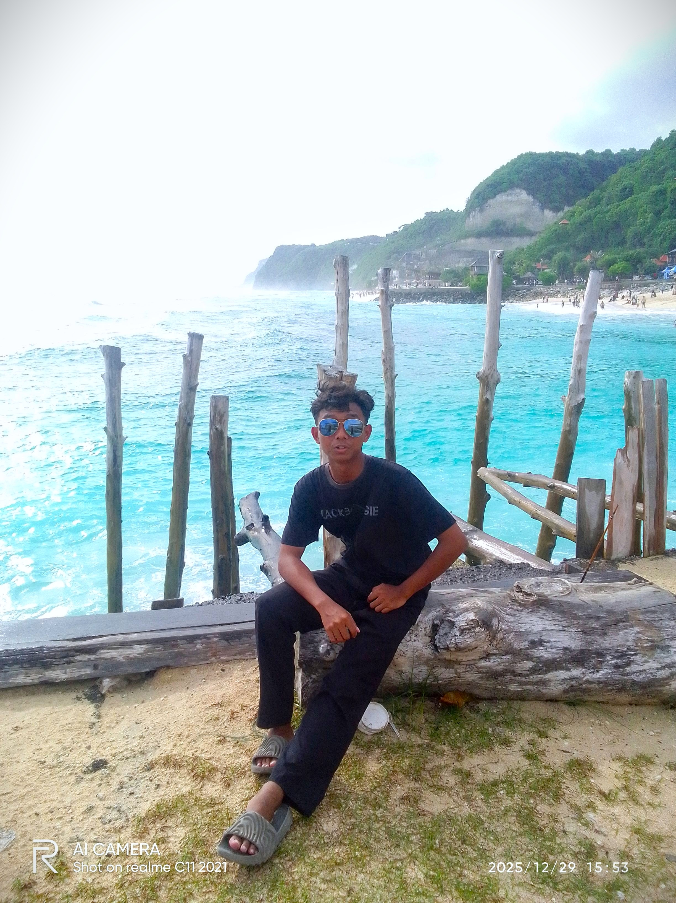

Hello, I'm
Wafi Amrullah Azzaky
Menyatukan estetika desain, narasi video, dan fungsionalitas web. Saya berfokus pada pemecahan masalah dan penciptaan solusi digital yang presisi memadukan kode yang efisien dengan visual yang memikat untuk hasil yang lebih dari sekadar berfungsi

Tentang Saya
Halo! Saya seorang kreator asal Cirebon yang bergerak di persimpangan antara estetika dan logika. Sebagai desainer dan video editor, saya bercerita melalui visual. Sebagai pengembang web, saya membangun struktur menggunakan HTML, CSS, dan JavaScript murni untuk menciptakan pengalaman digital yang bersih.
Keahlian tersembunyi saya adalah Problem solving. Saya sangat suka memperbaiki sesuatu yang rusak—baik itu bug pada kode, komposisi desain yang janggal, maupun alur video yang tidak sinkron. Saya memastikan setiap proyek tidak hanya terlihat bagus, tapi juga bekerja dengan sempurna.
Pengalaman & Proyek
Web Development
Membangun fondasi situs web yang kuat dan responsif menggunakan HTML, CSS, dan JavaScript murni. Saya berfokus pada penulisan kode yang efisien untuk menciptakan pengalaman pengguna yang cepat, fungsional, dan ramah di berbagai perangkat.
Video Editing
Menyusun narasi visual melalui proses editing yang presisi. Ahli dalam teknik pemotongan klip, penyelarasan audio, hingga pemberian efek transisi yang halus untuk menghasilkan konten video yang dinamis dan bercerita.
Graphic Design
Menciptakan identitas visual yang memikat dan konsisten. Mulai dari tata letak hingga pemilihan palet warna, saya memastikan setiap elemen desain memiliki nilai estetika tinggi yang mampu menyampaikan pesan secara efektif.
Troubleshooting & Repair
Sebagai seorang problem solver, saya ahli dalam menganalisis dan memperbaiki kegagalan sistem web atau ketidakkonsistenan desain. Saya memastikan setiap proyek yang 'bermasalah' kembali berfungsi optimal dengan standar kualitas terbaik.
Hubungi Saya
Mari Mulai Proyek Anda
Tertarik untuk bekerja sama atau sekadar menyapa? Jangan ragu untuk menghubungi saya melalui formulir atau media sosial.